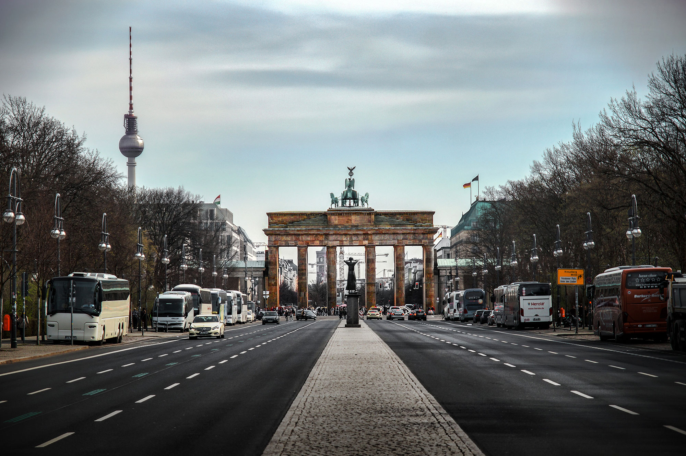

Back to Course Home Page
A Quick Look at the Brandenburg Gate
The Brandenburg gate was built between 1788 and 1791. It was created to be the key entry point to Berlin by Prussian Kind Frederick William II. The gate is topped by a statue known as the Quadriga, which is a statue of the goddess of victory driving a chariot pulled by four horses.
A Moment with Napoleon
The statue called Berlin home for a little over a decade before Napoleon Bonaparte and his Grand Army took it hostage in 1806. He ordered the Quadriga to be dismantled and shipped to Paris. But after Napoleon's defeat at the Battle of Waterloo (1815), the Quadriga was proudly reinstated on the Brandenburg gate and from that point onward, became a symbol of victory and an iron cross/eagle were added to the laurel wreath.
The Brandenburg Gate During WWII and Onward
The gate was used as a Nazi party symbol as they rose to power. The gate endured severe damage during the war and was restored in 1957 which included recasting the Quadriga from original molds. Even after WWII, the gate was a